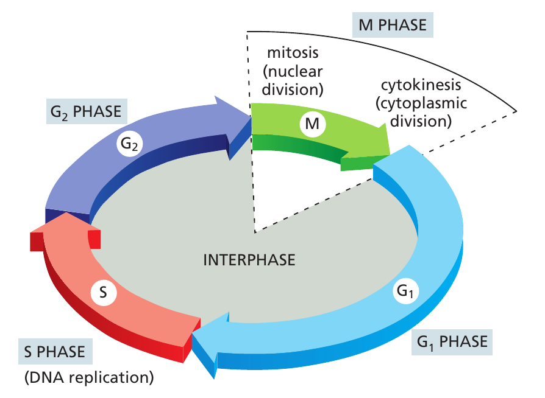

Chu kỳ tế bào
Khi nào tế bào được đi tiếp? Dùng sơ đồ chu kỳ và dữ liệu về lượng DNA để phân biệt chậm vào pha M với khó thoát pha M.
Bắt đầu họcGợi nhớ trước khi đọc
Trên giấy, vẽ vòng G₁ → S → G₂ → M. Đánh dấu nơi DNA nhân đôi, rồi ghi dự đoán về số bộ nhiễm sắc thể và lượng DNA ở G₁ và G₂.
Đọc hình và nắm cơ chế

Lần theo mũi tên. G₁, S và G₂ tạo thành gian kỳ. Pha M gồm phân chia nhân (mitosis) và phân chia tế bào chất (cytokinesis). Độ dài cung chỉ để minh họa.
Alberts và cộng sự, Essential Cell Biology, ấn bản 5, hình 18–2, trang in 611.

Đọc từ ô điều kiện đến vạch chặn. Tìm vị trí tế bào chậm vào S, chậm vào M và chậm tách hai chromatid chị em.
Alberts và cộng sự, Essential Cell Biology, ấn bản 5, hình 18–12, trang in 619.
Bấm vào hình để mở bản cỡ gốc.
Theo dõi 2n và lượng DNA
2n là hai bộ nhiễm sắc thể (NST). C là lượng DNA của một bộ NST chưa nhân đôi. Sau pha S, mỗi NST có hai chromatid chị em và tế bào lưỡng bội vẫn có hai bộ NST.
| Trạng thái | Bộ NST | DNA |
|---|---|---|
| G₁ | 2n | 2C |
| S | 2n | 2C → 4C |
| G₂ và pha M trước khi tách chromatid | 2n | 4C |
| Mỗi tế bào con sau khi chia | 2n | 2C |
Tìm bước bị trì hoãn
- Trước khi vào S
- Khi DNA bị tổn thương ở G₁, p53 có thể làm tăng p21. p21 ức chế các phức hợp cyclin–Cdk cần cho bước vào S.
- Trước khi vào M
- Khi DNA chưa sao chép xong hoặc còn tổn thương, ức chế Cdc25 giúp giữ M-Cdk ở trạng thái bất hoạt và trì hoãn vào M.
- Trong pha M
- NST chưa gắn thoi đúng có thể giữ APC/C bất hoạt và trì hoãn tách chromatid chị em. Để thoát M bình thường, tế bào cần làm giảm hoạt tính M-Cdk thông qua phân hủy M-cyclin.
Tự kiểm · Ba mẫu tế bào
Ba mẫu từ cùng một dòng tế bào lưỡng bội đang tăng sinh được đo tại một thời điểm. Phép đo xét từng tế bào đơn lẻ. Bảng là dữ liệu mô phỏng, biểu thị tỷ lệ tế bào theo lượng DNA.
| Mẫu | 2C | Giữa 2C và 4C | 4C |
|---|---|---|---|
| A · Đối chứng | 54% | 28% | 18% |
| B · Sau tổn thương DNA | 24% | 12% | 64% |
| C · M-cyclin không bị phân hủy | 22% | 13% | 65% |
- Mẫu B. Phần lớn tế bào 4C có màng nhân còn nguyên, NST chưa cô đặc và hoạt tính M-Cdk thấp.
- Mẫu C. Theo dõi tế bào nhóm 4C cho thấy chúng đã vào M. Hoạt tính M-Cdk vẫn cao.
Chọn một đáp án tốt nhất mỗi câu. Ghi dấu những câu bạn còn phân vân.
Tự luận · 4–6 câu
Giải thích vì sao B và C đều có nhiều tế bào 4C nhưng vướng ở hai bước khác nhau. Dùng dữ kiện của mỗi mẫu và giải thích vai trò của M-Cdk. Đề xuất một quan sát theo thời gian và dự đoán kết quả khác nhau giữa hai mẫu.
Đối chiếu và hẹn ôn
Chấm cả câu đúng do đoán. Chọn một lỗi cần sửa, ghi lại lý do bằng một câu và thử trả lời lại vào . Nếu mục đó vẫn còn yếu, xem lại vào hoặc .
Mở lời giải và thang chấmLời giải mở ở tab mới để bạn giữ bài làm đang nhập. Ghi ra giấy hoặc sao chép nếu muốn giữ bài sau khi đóng trang.